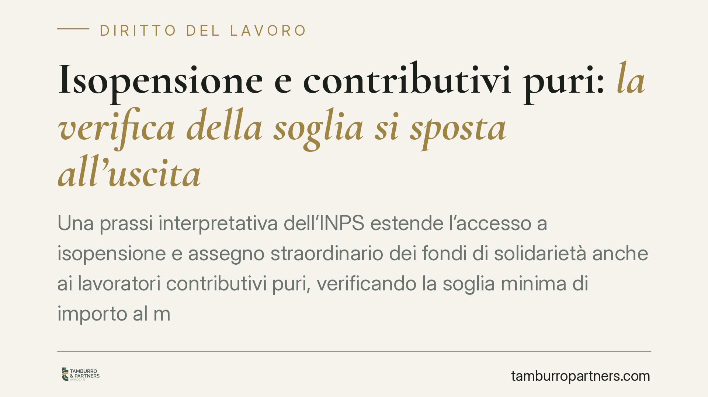

Isopensione e contributivi puri: la verifica della soglia si sposta all'uscita
Una prassi interpretativa dell'INPS estende l'accesso a isopensione e assegno straordinario dei fondi di solidarietà anche ai lavoratori contributivi puri, verificando la soglia minima di importo al momento dell'uscita e non a quello del pensionamento. Il tema resta tecnicamente delicato: qui inquadriamo la disciplina certa e ciò che il lavoratore deve controllare prima di aderire a un esodo.

Il contesto
Gli strumenti di accompagnamento alla pensione — l'isopensione e l'assegno straordinario erogato dai fondi di solidarietà — consentono di uscire anticipatamente dal lavoro con un sostegno economico fino alla maturazione dei requisiti pensionistici. Sono da tempo utilizzati nelle ristrutturazioni aziendali concordate con le organizzazioni sindacali.
Un nodo applicativo ricorrente riguarda i cosiddetti lavoratori contributivi puri. La questione emersa in sede interpretativa è la seguente: il requisito dell'importo minimo della futura pensione va verificato al momento dell'adesione all'esodo (l'uscita dal lavoro) oppure al momento del pensionamento effettivo? La collocazione temporale della verifica cambia sensibilmente la platea dei lavoratori che possono accedere allo strumento.
> Nota di verifica. Al momento della redazione non risulta confermata una circolare INPS con numero e anno specifici che regoli il punto. Il presente contributo espone quindi la disciplina normativa certa e la logica interpretativa del problema, senza fondarsi su una fonte non verificata. Prima di qualsiasi decisione è indispensabile controllare le indicazioni INPS effettivamente in vigore.
Inquadramento normativo
L'isopensione è disciplinata dall'art. 4 della legge 28 giugno 2012, n. 92 (cosiddetta Riforma Fornero). Lo strumento consente, negli accordi con i sindacati e per esuberi da gestire, l'erogazione a carico dell'azienda di una prestazione mensile pari alla pensione che spetterebbe al lavoratore, unitamente al versamento della relativa contribuzione figurativa. La prestazione è interamente a carico del datore di lavoro: l'INPS eroga anticipando ma l'onere economico resta aziendale.
L'assegno straordinario dei fondi di solidarietà opera con logica analoga per i settori dotati di fondo bilaterale, sulla base dei rispettivi decreti istitutivi.
La distinzione che rileva riguarda il regime previdenziale. È contributivo puro chi non vanta anzianità contributiva al 31 dicembre 1995 (o, più precisamente, chi ha meno di 18 anni di contributi a quella data e ricade integralmente nel sistema contributivo). Per costoro l'accesso alla pensione di vecchiaia richiede, oltre all'età e all'anzianità, il rispetto di una soglia minima di importo: l'art. 24, comma 7, del d.l. 6 dicembre 2011, n. 201, convertito con legge n. 214/2011, richiede che l'assegno sia pari o superiore a un valore soglia rapportato all'assegno sociale (parametro storicamente fissato in 2,8 volte per la vecchiaia contributiva anticipata rispetto ai 67 anni).
Perché la tempistica della verifica conta
Se la soglia di importo viene verificata al pensionamento, molti contributivi puri restano esclusi dall'esodo, perché al momento dell'uscita non è possibile garantire con certezza il raggiungimento del valore minimo anni dopo. Se invece la verifica è collocata al momento dell'uscita — sulla base dell'importo maturato e proiettato — la platea si amplia e lo strumento diventa fruibile anche da chi ha iniziato a versare dal 1996.
Si tratta di una differenza sostanziale: il punto temporale di verifica determina l'accesso o l'esclusione dallo strumento e va accertato caso per caso.
Implicazioni pratiche
Per il lavoratore, l'adesione a un piano di esodo comporta la cessazione del rapporto in cambio della prestazione ponte. È una scelta di regola irreversibile: una volta perfezionata l'adesione non è possibile tornare sui propri passi. Va quindi valutata con dati certi, non su aspettative.
Occorre inoltre verificare che, alla fine del periodo di accompagnamento, i requisiti pensionistici siano effettivamente raggiungibili: un errore di calcolo espone al rischio di restare senza reddito da lavoro e senza pensione.
Cosa fare in concreto
- Richiedi l'estratto conto contributivo e verifica la posizione, individuando l'eventuale anzianità al 31/12/1995 e il regime applicabile.
- Ottieni una simulazione dell'importo della futura pensione e della prestazione di esodo, con proiezione alla data di uscita e a quella di pensionamento.
- Esamina l'accordo aziendale e sindacale prima di sottoscrivere: durata, importo, contribuzione figurativa e clausole di decadenza.
- Valuta le alternative (permanenza, altre uscite anticipate) confrontando gli scenari economici complessivi.
- Pretendi tutto per iscritto e conserva la documentazione: le condizioni verbali non tutelano in caso di contestazione.
Consigliamo una verifica puntuale della propria posizione e delle indicazioni INPS effettivamente vigenti prima di aderire.
Disclaimer
Contributo informativo a cura di Tamburro & Partners - Avv. Giuseppe Tamburro. Non costituisce parere legale.
Ogni storia di lavoro ha i suoi tempi.
Se gestisci HR e vuoi un confronto su contenzioso, ispezioni o licenziamenti, scrivi allo studio. Ti rispondiamo entro un giorno lavorativo.